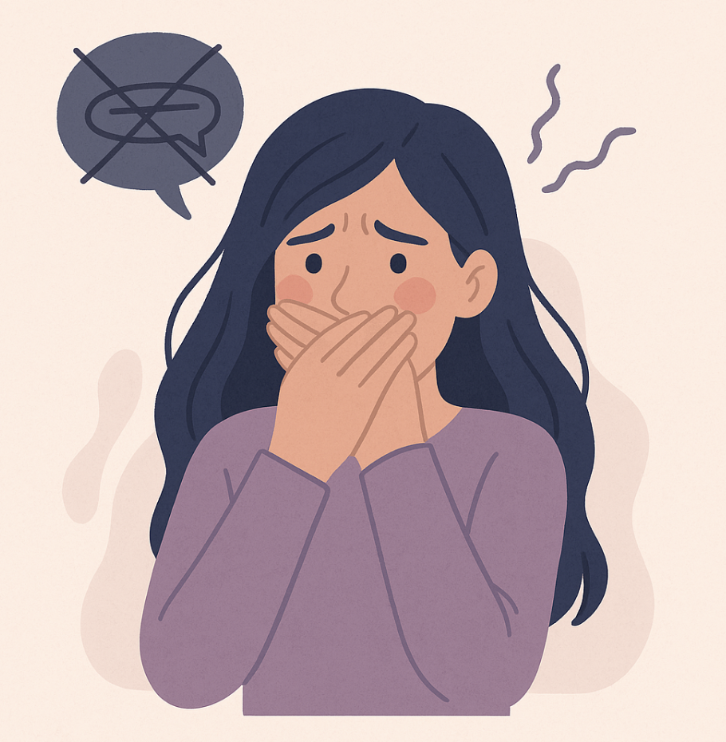

أوقات بنكون مليانين مشاعر، بس مش قادرين نحكي. منخاف ينفهم غلط، أو يزعلوا منا، أو بس... ما بنعرف من وين نبدأ.
إذا كنتِ حاسّة إنك مش قادرة تعبّري – فهاد طبيعي ومش معناه إنك ضعيفة. الخوف مفهوم، والمشاعر إلها وقتها. 💗
الخوف من التعبير بييجي من تجارب سابقة أو من توقعات من اللي حوالينا. مرات بنفكر إنه أحسن نخبي لنحمي حالنا، بس هالشي بيخلي القلب يوجع أكتر.
✨ لما ما بنحكي، القلب بيصير يحكي بطرق تانية. حاولي تسمعيه بلطف.
🎥 فيديو قصير (بالإنجليزية) عن كيف نتعامل مع مشاعرنا بدون خوف، وبطريقة صحية ومحبة.
صار معك شعور قوي بس ما قدرتي تحكيه؟
كل شعور له مكان، وله حق، وله وقت. مش لازم تحكي كل شي – بس كمان مش لازم تكملي تكتمي الكل 💗
رجوع إلى الدماغ 🧠